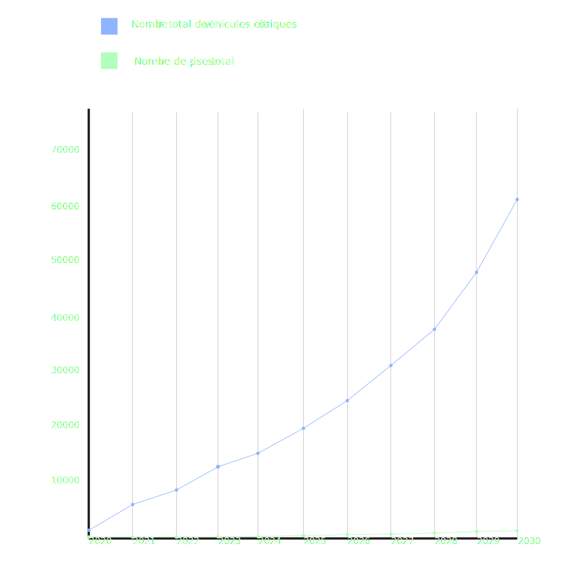

The Development of Haute-Loire’s Electric Vehicle Infrastructure: Challenges and Projections for 2030
As electric vehicles (EVs) become more common in the fight against climate change, Haute-Loire faces two major challenges: getting more EVs on the road and expanding the charging infrastructure to support them. With 2030 approaching, the success of this transition will depend heavily on how quickly charging stations are rolled out and how accessible they are for EV users.
Current Trends and 2030 Goals The EV market in Haute-Loire has been growing steadily, but the rollout of charging stations hasn’t kept pace. In 2020, only 957 EVs were registered in the department. By 2021, that number had jumped to 5,618 an incredible 587% increase. By the end of 2024, projections suggest there could be around 15,576 EVs on the roads of Haute-Loire, showing a sharp rise in just a few years.
The region has set ambitious goals: it aims for 15% of all vehicles to be electric by 2030. That would mean around 179,688 EVs out of a projected 1.17 million vehicles. To hit this target, Haute-Loire will need not only a huge increase in EV sales but also a rapid expansion of public charging stations, aiming for one public charger for every ten EVs.
Lagging Charging Infrastructure
While the number of EVs is climbing fast, the charging network hasn’t kept up. In 2020, Haute-Loire had only five public chargers. By 2021, that number had doubled to ten, but it’s still way behind the growing demand. By the end of 2024, there are expected to be 52 public chargers, which still won’t be nearly enough to meet the needs of the increasing number of EV drivers.
If this slow pace continues, Haute-Loire could fall short of its 2030 goal of one public charger for every ten EVs. At the current rate, the region would need 6,033 public charging stations by 2030 to meet demand. However, without a much faster installation process, it’s unlikely to reach that number.
Why the 1-to-10 Ratio Matters
The goal is clear: by 2030, Haute-Loire needs to have one public charging station for every ten electric vehicles. But right now, the numbers are concerning. In 2023, only 30 public chargers were available for over 12,414 EVs—far from the ideal 1-to-10 ratio. Even with the planned increase to 1,410 public chargers by 2030, the rapid growth of EVs is expected to outstrip the infrastructure.
This highlights the urgent need for government action to speed up the rollout of public chargers. While home charging can relieve some of the pressure, public chargers are crucial for longer trips and for encouraging wider EV adoption, especially in rural areas and along major roads.
Looking Forward: Trends and the Path to 2030
If current trends continue, Haute-Loire could have up to 60,774 EVs on the road by 2030. To keep up with this growth, significant investment in public charging stations will be essential. Even in the best-case scenario, the region will need to increase the pace of infrastructure development by more than 200% to stay on track, even if it reaches its goal of 15% EVs.
The data also suggests that while the share of EVs in the vehicle market is growing, it’s not happening fast enough. By 2030, the percentage of EVs in Haute-Loire’s total vehicle fleet is expected to rise from 1.15% in 2023 to 5.2%. While this is progress, more aggressive policies, incentives for consumers, and stronger support for manufacturers and infrastructure providers will be necessary to hit the 15% target.

The 2030 Roadmap: Speeding Up Development
To meet its 2030 targets, Haute-Loire needs to accelerate both EV adoption and the expansion of its charging infrastructure. EV sales are on the rise, but the slow development of public charging stations could become a major roadblock if left unaddressed.
Without bold policy measures, increased funding, and close cooperation between the public and private sectors particularly in rural and remote areas Haute-Loire may struggle to reach its goals. Achieving the 2030 targets will require not only building a well-distributed, reliable, and accessible charging network but also making EVs more attractive to a wider audience in the years to come.
For Haute-Loire to be at the forefront of the electric mobility revolution, local authorities will need to move quickly to ensure that the charging infrastructure grows in line with the increasing number of electric vehicles on the road.